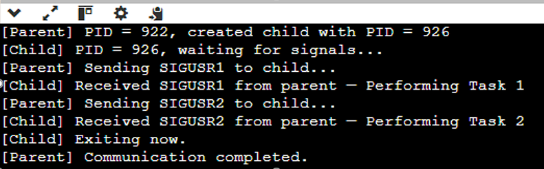
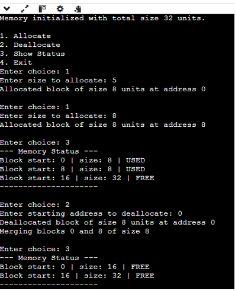

INTER-PROCESS COMMUNICATION (IPC) USING USER-DEFINED SIGNALS
#include <stdio.h>
#include <stdlib.h>
#include <unistd.h>
#include <signal.h>
void handle_sigusr1(int sig) {
printf("[Child] Received SIGUSR1 from parent - Performing Task 1\n");
}
void handle_sigusr2(int sig) {
printf("[Child] Received SIGUSR2 from parent - Performing Task 2\n");
printf("[Child] Exiting now.\n");
exit(0);
}
int main() {
pid_t pid = fork();
if (pid < 0) {
perror("Fork failed");
exit(1);
} else if (pid == 0) {
printf("[Child] PID = %d, waiting for signals...\n", getpid());
signal(SIGUSR1, handle_sigusr1);
signal(SIGUSR2, handle_sigusr2);
while (1) { pause(); }
} else {
printf("[Parent] PID = %d, created child with PID = %d\n", getpid(), pid);
sleep(2);
printf("[Parent] Sending SIGUSR1 to child...\n");
kill(pid, SIGUSR1);
sleep(3);
printf("[Parent] Sending SIGUSR2 to child...\n");
kill(pid, SIGUSR2);
sleep(1);
printf("[Parent] Communication completed.\n");
}
return 0;
}

▶ Run on OnlineGDB
Implementation of Buddy System Memory Allocation
#include <stdio.h>
#include <math.h>
#define MAX_ORDER 5
#define MEMORY_SIZE (1 << MAX_ORDER)
typedef struct Block {
int size;
int start;
int free;
} Block;
Block memory[MEMORY_SIZE];
void initialize_memory() {
for (int i = 0; i < MEMORY_SIZE; i++) {
memory[i].size = MEMORY_SIZE;
memory[i].start = 0;
memory[i].free = 1;
}
printf("Memory initialized with total size %d units.\n", MEMORY_SIZE);
}
int allocate(int request) {
int size = 1;
while (size < request) size *= 2;
if (size > MEMORY_SIZE) {
printf("Request too large!\n");
return -1;
}
for (int i = 0; i < MEMORY_SIZE; i += size) {
if (memory[i].free && memory[i].size >= size) {
memory[i].free = 0;
memory[i].size = size;
printf("Allocated block of size %d units at address %d\n", size, i);
return i;
}
}
printf("No suitable block found!\n");
return -1;
}
void deallocate(int address) {
if (address < 0 || address >= MEMORY_SIZE) {
printf("Invalid address.\n");
return;
}
int size = memory[address].size;
memory[address].free = 1;
printf("Deallocated block of size %d units at address %d\n", size, address);
int buddy = address ^ size;
if (buddy < MEMORY_SIZE && memory[buddy].free && memory[buddy].size == size) {
printf("Merging blocks %d and %d of size %d\n", address, buddy, size);
int merged_start = (buddy < address) ? buddy : address;
memory[merged_start].size = size * 2;
memory[merged_start].free = 1;
memory[address].size = memory[buddy].size = size * 2;
}
}
void show_status() {
printf("\n--- Memory Status ---\n");
for (int i = 0; i < MEMORY_SIZE; i++) {
if (memory[i].free)
printf("Block start: %d | size: %d | FREE\n", i, memory[i].size);
else
printf("Block start: %d | size: %d | USED\n", i, memory[i].size);
}
printf("---------------------\n");
}
int main() {
initialize_memory();
int ch, addr, size;
while (1) {
printf("\n1. Allocate\n2. Deallocate\n3. Show Status\n4. Exit\nEnter choice: ");
scanf("%d", &ch);
switch (ch) {
case 1:
printf("Enter size to allocate: ");
scanf("%d", &size);
allocate(size);
break;
case 2:
printf("Enter starting address to deallocate: ");
scanf("%d", &addr);
deallocate(addr);
break;
case 3:
show_status();
break;
case 4:
return 0;
default:
printf("Invalid choice!\n");
}
}
}

▶ Run on OnlineGDB